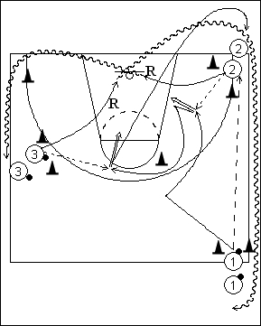

Catégorie : SHOOTS (Sh-004)
Déroulement
- Trois files. Les ballons se trouvent dans les files 1 et 3.
- Le premier joueur de la file 1 passe au premier joueur de la file 2, se démarque, reçoit le ballon en retour et réalise son premier jump shoot. Il se démarque à nouveau en contournant le cône situé près de la ligne des trois points et reçoit le ballon du premier joueur de la file 3 pour un nouveau jump shoot. Chaque passeur effectue le rebond du ballon qu’il a donné.
- Après son deuxième shoot, 1 va dans la file 2. Après le rebond du premier shoot, 2 va en dribble dans la file 3 en contournant le cône du coin de terrain. Enfin, après le rebond du deuxième shoot, 3 va en dribble dans la file 1.
Coaching points
- Insister sur la qualité des démarquages et des shoots après réception correcte.
- Si on a des joueurs supplémentaires, les placer avant tout dans les files 1 et 3.
- Dès que le premier joueur de 1 reçoit le ballon de 3 pour son deuxième shoot, le deuxième joueur de la file 1 exécute l’exercice à son tour.